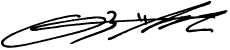

Hello!
Sou o Orkut. 17 anos atrás eu criei uma pequena rede social enquanto eu trabalhava no Google como engenheiro de software. Em apenas alguns anos, essa rede social se tornou o orkut.com com mais de 300 milhões de usuários.
Acredito que o orkut.com encontrou sua comunidade porque reuniu tantas vozes diversas de todo o mundo em um só lugar. Trabalhamos muito para tornar o orkut.com uma comunidade onde o ódio e a desinformação não fossem tolerados. Nos dedicamos muito para tornar o orkut.com uma comunidade onde você pudesse conhecer pessoas reais que compartilhavam seus mesmos interesses, não apenas pessoas que curtiram e comentaram em suas fotos.
O mundo precisa de bondade agora mais do que nunca. Hoje em dia, há muito ódio online, e nossas opções para encontrar e construir conexões reais são poucas e distantes. Sempre acreditei que uma amizade é mais do que um pedido de um amigo e dediquei minha vida a ajudar milhões de pessoas a construir conexões autênticas com seus vizinhos, familiares, funcionários e os belos estranhos que entram em suas vidas.
Nossas ferramentas online devem nos servir, não nos dividir. Eles devem proteger nossos dados, não vendê-los. Eles devem nos dar esperança, não medo e ansiedade. A melhor rede social é aquela que enriquece sua vida, mas que não a manipula. Quero que você seja capaz de ser seu verdadeiro eu, online e desligado. Quero que você consiga fazer conexões que se mantenham. Eu quero ajudá-lo a fazer isso com todo o meu coração.
Eu sou otimista. Eu acredito no poder da conexão para mudar o mundo. Acredito que o mundo é um lugar melhor quando nos conhecemos um pouco mais. Foi por isso que criei a primeira rede social do mundo quando era estudante de graduação em Stanford. Foi por isso que trouxe o orkut.com para muitos de vocês em todo o mundo. E é por isso que estou construindo algo novo. Até breve!
Inscreva-se abaixo para obter atualizações e seja o primeiro a saber sobre isso.
continue sendo o que você é,
- Orkut